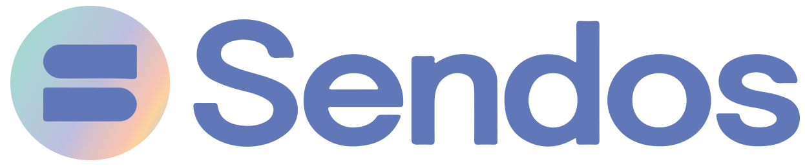

Metodología de Diseño UX/UI: Diseño Centrado en el Usuario (UCD)
Este documento describe la metodología paso a paso seguida por nuestro diseñador UX/UI, enfocándose en el diseño centrado en el usuario (UCD). El proceso está informado por varias metodologías, incluyendo Design Thinking, Lean UX y Atomic Design, entre otras.
1. Benchmarking
Objetivo: Identificar estándares de la industria y mejores prácticas.
-
Proceso: Analizar productos y servicios de la competencia.
-
Resultado: Obtener conocimientos sobre elementos de diseño y funcionalidades efectivas.
2. Entrevista de Investigación
Objetivo: Entender las necesidades, comportamientos y puntos de dolor de los usuarios.
-
Proceso: Realizar entrevistas con usuarios objetivo.
-
Resultado: Recopilar datos cualitativos para informar las decisiones de diseño.
3. User Persona
Objetivo: Crear perfiles detallados de los usuarios objetivo.
-
Proceso: Compilar datos de entrevistas e investigación.
-
Resultado: Desarrollar personas de usuario que representen segmentos clave de la base de usuarios.
4. User Journey
Objetivo: Mapear los pasos que los usuarios toman para alcanzar sus objetivos.
-
Proceso: Esbozar el recorrido del usuario de principio a fin.
-
Resultado: Identificar puntos de contacto, puntos de dolor y oportunidades de mejora.
5. Análisis de Interfaces
Objetivo: Evaluar interfaces existentes en términos de usabilidad y estética.
-
Proceso: Realizar evaluaciones heurísticas y pruebas de usabilidad.
-
Resultado: Identificar fortalezas y debilidades en los diseños actuales.
6. Arquitectura de Información
Objetivo: Organizar contenido y funcionalidades en una estructura coherente.
-
Proceso: Crear mapas del sitio y flujos de usuario.
-
Resultado: Asegurar que los usuarios puedan encontrar información y completar tareas fácilmente.
7. Patrones de UI
Objetivo: Identificar patrones de diseño comunes para consistencia.
-
Proceso: Investigar y documentar patrones de UI.
-
Resultado: Crear una biblioteca de elementos de diseño reutilizables.
8. Pruebas de Guerrilla
Objetivo: Recopilar rápidamente feedback sobre conceptos de diseño.
-
Proceso: Realizar pruebas informales y rápidas con usuarios.
-
Resultado: Identificar problemas de usabilidad e ideas inmediatas.
9. Wireframes Digitales
Objetivo: Visualizar el diseño y la estructura de la interfaz.
-
Proceso: Crear wireframes de baja fidelidad usando herramientas digitales.
-
Resultado: Proporcionar una representación básica de la interfaz para revisión.
10. Mood Board
Objetivo: Establecer la dirección visual y el tono del diseño.
-
Proceso: Compilar imágenes, colores y tipografía.
-
Resultado: Alinear al equipo de diseño en el estilo visual.
11. Creación del Sistema de Diseño
Objetivo: Desarrollar un conjunto cohesivo de estándares de diseño.
-
Proceso: Definir componentes, estilos y guías.
-
Resultado: Asegurar consistencia en todos los elementos de diseño.
12. Diseño Responsivo
Objetivo: Asegurar que el diseño funcione en varios dispositivos.
-
Proceso: Crear diseños y elementos flexibles.
-
Resultado: Proporcionar una experiencia de usuario fluida en cualquier dispositivo.
13. Pruebas de Usuario
Objetivo: Validar el diseño con usuarios reales.
-
Proceso: Realizar pruebas de usabilidad y recopilar feedback.
-
Resultado: Refinar y mejorar el diseño basado en la retroalimentación de los usuarios.
Metodologías Utilizadas
-
Design Thinking: Empatizar, Definir, Idear, Prototipar, Probar.
-
Lean UX: Construir, Medir, Aprender.
-
Atomic Design: Átomos, Moléculas, Organismos, Plantillas, Páginas.
Resumen
Nuestro proceso de diseño UX/UI está profundamente arraigado en el Diseño Centrado en el Usuario (UCD), asegurando que cada paso esté enfocado en satisfacer las necesidades y expectativas del usuario final. Al aprovechar metodologías como Design Thinking, Lean UX y Atomic Design, creamos diseños intuitivos, eficientes y visualmente atractivos que ofrecen una experiencia de usuario superior.
Este Documento sirve como una guía comprensiva de nuestra metodología de diseño UX/UI, destacando la importancia de centrar el diseño en el usuario para crear productos digitales efectivos.